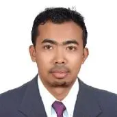
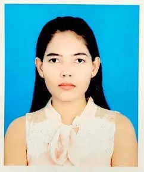

Our team
Staff and volunteers from Rakhine and Yangon, many of them long-time members of Renaissance Language Campus.
-

Aung Aung Naing
Director
Founder of Renaissance Language Campus Yangon. Led fisheries and resource co-management work across Myanmar's coastal regions (2012–2018) and advised World Bank missions.
-
Aye Yin
Non-incentive Volunteer
-
Tun Tin
Programme Manager
Former Deputy Education Officer
-

Aung Mrat Thein
Project Officer
Over a decade in tourism and social work, with NGO/INGO experience in monitoring and evaluation, interpretation, translation and training. BA in English, Sittway University.
-

Thu Zar Htway
Finance Officer
Physics graduate and trained nurse with a diploma in business management. Former ACF nutrition nurse who later ran her own pharmacy and organic store.
-

Kyaw Htet Khine
Community Outreach Coordinator
Rakhine native with three years as a community focal point for PDI Kintha, plus sales and accounting experience. Programme coordinator at Renaissance Language Campus.
-

Naing Sann Worn
Logistics
Economics graduate from Yangon University of Economics, from northern Rakhine State. Community development experience with the Maramagyi Youth Network and CDNH.
-
Aung Khant Zaw
Procurement
Partner with us
We welcome partnerships with organizations and institutions that share our vision of enhancing education, healthcare, and resource governance. By working together, we can achieve greater impact and drive meaningful change in the communities we serve.